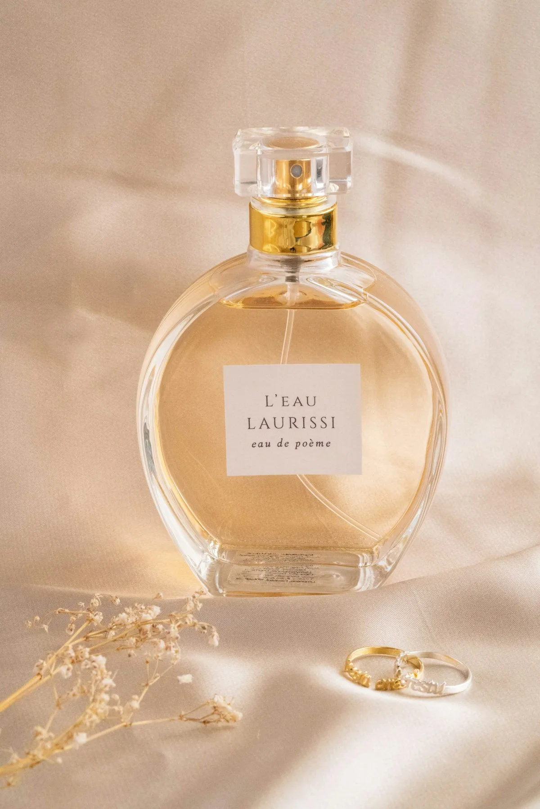

The Collection
Fine Pearl Jewelry
Each piece is designed to allow the pearl to speak — minimal settings that honor rather than overwhelm nature's perfect object.



Our Philosophy
A pearl requires perfect patience — three to seven years of undisturbed growth in water of absolute purity. We cultivate that patience.
Our six estates occupy glacially-fed lakes with zero agricultural runoff. The water quality required to produce luminous pearls is maintained through rigorous conservation of the surrounding watershed.
We nucleate fewer mussels than any commercial cultivator — the crowding that produces quantity destroys quality. Every LACUSTRE pearl grows in conditions approaching its wild origin.
Every piece of LACUSTRE jewelry comes with a provenance document specifying the lake of origin, harvest year, mussel lineage, and the artisan who set the pearl. A complete history in every clasp.
The Collection
Each piece is designed to allow the pearl to speak — minimal settings that honor rather than overwhelm nature's perfect object.

The Lake

Our six lake estates span three countries — the Swiss Pre-Alps, the Finnish lake district, and the glacial lakes of northern Patagonia. Each was selected for water of extraordinary clarity, free from industrial and agricultural influence.
The pearl mussel lines float at precisely calibrated depths, where temperature, light, and mineral content combine to produce the nacre quality that LACUSTRE is known for: deep luster, smooth surface, and a orient that shifts with every angle of light.
We employ resident lake keepers at each estate — people who monitor water quality daily, hand-harvest at exactly the right moment, and have typically spent their entire careers at a single lake. Their knowledge of each body of water is irreplaceable.
The Process
The cultivation of a LACUSTRE pearl is a commitment that spans years. We are always working at least seven years into the future.
We cultivate our own mussel seed from parent lines selected over decades for health, size, and nacre quality. Only the strongest individuals from each generation are used for nucleation — we reject over 80% at this stage.
A minute nucleus — a sphere of freshwater mussel shell, cut to 0.5–3mm depending on the desired pearl size — is surgically implanted into the mussel's mantle tissue by a trained technician working under magnification. This is the most delicate moment in the entire process.
The nucleated mussels return to the lake for between three and seven years. They are checked twice yearly for health and position, and the lines are adjusted for optimal water flow. During this time, layer after layer of nacre builds around the nucleus.
Harvesting happens in autumn, when water temperatures are lowest and nacre is densest. Each pearl is graded across eight criteria: luster, surface quality, shape, size, color, orient, matching (for strands), and nacre thickness.
Only pearls meeting our highest grade — roughly 12% of each harvest — enter the LACUSTRE jewelry collection. They are matched by hand, sometimes from multiple harvests across multiple lakes, and set by goldsmiths in Geneva and Helsinki.
Our Story
Founder Elena Vasari, a freshwater biologist, acquires rights to cultivate in Lago di Ledro in the Italian Pre-Alps, the first dedicated freshwater pearl estate in Europe.
LACUSTRE jewelry debuts at Salone del Mobile in Milan. The simplicity of the designs — letting freshwater pearls speak without ornament — is immediately noted by critics.
Partnership with a Finnish lake conservation trust enables cultivation in the pristine Saimaa lake system — the largest lake in Finland and one of the cleanest in the world.
Opening of the world's southernmost freshwater pearl estate on a glacially-fed lake in Chilean Patagonia. The cold, pure water produces pearls of exceptional density and luster.
Recognition
Bespoke Service
LACUSTRE's bespoke service begins with pearl selection — you choose from our inventory of exceptional specimens, including pieces reserved exclusively for commissions. A goldsmith then works with you to design a setting.
Bespoke pieces typically take 6–12 weeks from brief to delivery. All bespoke work is accompanied by our full provenance documentation and a 10-year service guarantee.
Commissions from €1,200. We ship worldwide with full insurance to any destination.